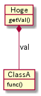

Lua のトランスコンパイラを考える (LuneScript)
Table of Contents
lctags の機能追加が一段落したので、 別ツールの開発に取り組もうと思う。
その別ツールとして検討しているのが、Lua のトランスコンパイラである。
ここでは、検討中の Lua のトランスコンパイラについて内容をまとめる。
Lua のトランスコンパイラの仕様については、検討した結果を随時更新する。
1 Lua のトランスコンパイラが必要な理由
Lua は軽量で、かつ実行パフォーマンスも高い言語である。 しかし、Lua には次に挙げる欠点がある。
- Lua は動的型付け言語であるため、動的型付け言語の欠点が全て当てはまる。
- Lua は C や Java などの言語に比べるとマイナーな言語であり、開発をサポートするツールが少ない。
規模の小さいスクリプトを作成している分には問題ないが、 ある程度の規模のスクリプトを開発する場合、 上記問題はインパクトが大きい。
この問題を解決するために Lua のトランスコンパイラが必要となる。
ちなみに、ここで言う Lua のトランスコンパイラとは、 ある言語で書いたスクリプトを Lua のスクリプトへ変換するツールを指す。
1.1 欠点に対するアプローチ
ここでは、Lua の上記欠点に対するトランスコンパイラを用いたアプローチを示す。
- 動的型付け言語の欠点
- トランスコンパイラの変換元の言語に静的片付け言語を採用することで、 動的型付け言語の欠点をカバーすることが出来る。
- これは typescript と javascript の関係と同様
- 開発をサポートするツールが少ない
- トランスコンパイラの変換先の言語に Lua だけでなく、 C 等のメジャーな言語をサポートすることで、 そのメジャーなサポートツールの利用が可能となる
2 トランスコンパイラに必要な要件
上記の欠点をカバーするためのトランスコンパイラに必要な要件を挙げる。
- 変換元の言語として、静的片付け言語を採用する
- 変換先の言語として、 Lua と C/C++ 言語をサポートする。
- 以降 C と記載した場合は C++ も含める。
- C への変換は、C でビルドして native で動かすのが目的ではなく、
メジャーな言語に変換してサポートツールを利用するのが目的である。
- よって、変換後の C プログラムの実行パフォーマンスを優先しない。
- luaSocket 等の標準外モジュールを利用したプログラムは、
C への変換を行なっても、変換後のリンクまではサポートしない。
- この場合、プログラムの動的な情報を元に開発をサポートするツールが 利用できなくなってしまうが、 開発をサポートするツールは動的な情報と静的な情報を利用するタイプがあり、 静的な情報を利用するタイプはリンクまで出来なくても利用出来る。
- よって、標準外モジュールの C へのコード変換は非サポートとする。
- ただし、標準外モジュールのスタブの雛形までは作成する。
- スタブを作成し、スタブの中身を実装すれば動かせるレベルにする。
- Lua への変換は、変換後の Lua スクリプトの実行パフォーマンスを優先する。
- というか、変換元の言語ほぼそのまま Lua に落せるような Syntax にする。
- 変換時に最適化のようなことはせず、基本的には書かれたままの処理にする。
- トランスコンパイラ自体を Lua で実行可能なスクリプトとして開発する
- 変換元の言語で書かれたスクリプトを読み込み、そのまま実行可能とする
- 実行時に Lua ファイルと中間ファイルを生成し、次に実行する際は変換済みファイルを利用する
- 中間ファイルには、元のファイルに定義されている型やメソッドなどのメタ情報を含める
以上の要件を満す変換元の言語として利用可能な既存の言語は無い。 ちなみに、 Lua へトランスコンパイル可能な言語として既に Moon Script があるが、 Moon Script の Syntax から C への変換は困難だと感じた。
もしかしたら他に変換元言語として相応わしい言語があるかもしれないが、 少なくとも私は知らないため、ここでは新しく言語を作成することを考える。
まぁ「いつかは実用的な新しい言語を作ってみたい」という 技術的好奇心が大きいことは否定しない。
3 変換元の言語の要件
変換元言語の名称は、LuneScript (ルーンスクリプト)とする。
LuneScript の要件を挙げる
- 変換先の言語に C 言語をサポートするため、
メモリ管理として gc を前提にしない。
- とはいえ、alloc/free を明示するのはイマドキ有り得ないので、 Rust の所有権方式を参考にする
- 学習コストを下げるため、Syntax は C 言語/Lua を基調とする。
- コルーチンや anonymous 関数、クロージャ等、 Lua が採用している機能をなるべく採用する。
- ただし、 metatable の概念は Lua の独自色が強過ぎするので採用しない。
- 言語レベルでオブジェクト思考プログラミングをサポートする
- Lua 単体で実現出来ない機能は、採用しない。
- Lua の拡張モジュールの利用を前提としない。
- 変換後の Lua ソースの可読性が多少悪くなっても、 Lua 単体で実現可能であれば採用を検討する。
- 前述の通り、変換後の C ソースはビルドしてオブジェクトが出来ることは保証するが、
リンクまでは保証しない。
- もちろん変換後の C ソースは、変換前のソースと論理的に一致させる。
- 値は符号付き整数(int)と浮動小数点実数(real)をサポートする。
- ビット幅の違いや、符号の有無はサポートしない。
- Lua スクリプトで書かれた外部モジュールは、 Glue 無しで LuneScript からそのまま利用可能とする。
- Lua の標準関数を全て利用可能とする。
- ただし、関数名は完全一致しなくても良い。
- LuneScript を使って lctags を開発するのに困らないレベルにする。
- LuneScript 内に記載したコメントは、変換前の位置に該当する変換後の位置にそのまま挿入する。
- これは lint 等の静的解析ツールで指摘された際、 その指摘を抑制するためにコメントが利用されるため、 コメントが所定の位置に挿入されることが必要。
- Lua の table の概念を、array(list)と map に分ける。
- これは出力先に C を考えたときに array と map に分けた方が扱い易いのと、 そもそも Lua の table が ipairs と pairs で動きが変わる設計なのがイマイチなので。
- ただし、 array のインデックスは 1 からとする。
- array, map は generics をサポートする。
4 LuneScript の開発方針
- 前述の通り、 LuneScript のトランスコンパイラは Lua で動作可能とする。
- また、トランスコンパイラ自体を LuneScript で開発する。
- トランスコンパイラを開発するのに最低限必要な部分を Lua で作成し、 LuneScript から C への変換に必要なライフタイムチェックなどの複雑な処理を含めて LuneScript で作成する。
- トランスコンパイラ自体を LuneScript で開発することで、 実用に耐える品質を担保する。
5 LuneScript syntax
ここでは LuneScript の Syntax を示す。
5.1 組込み型
組込み型として、次の型を持つ。
- int
- 符号付き整数
- int_
- nil を代入可能な int
- real
- 浮動少数点実数
- real_
- nil を代入可能な real
- str
- 文字列 (Lua の文字列そのもの)
- Array
- 配列( インデックスは 1 から。 Lua のシーケンスそのもの。 )
- Map
- キーと値の関連付け (Lua のテーブルそのもの。 )
- func
- 関数
- stem
- 上記のいずれか何でもあり
- Lua の変数そのもの
5.1.1 型変換
一部の型の値は、型を変換することが出来る。
変換する場合は次の書式を利用する。
val@type
これは val の値を type に変換することを宣言する。
val@int
例えば、上記は val の値を int に変換している。
5.2 コメント
Lua と同じ書式をサポートする。
5.3 演算子
原則的に、演算子 は Lua と同じものを利用する。 ただし、 Lua のメソッド呼び出しで利用する : は使用しない。
5.4 数値
数値表現は Lua と同じものを採用する。
5.4.1 演算
数値の演算は Lua と同じものを採用する。
int と int の演算結果は int になる。 real と real の演算結果は real になる。 int と real の演算結果は real になる。
ただし、 int と int の演算結果が int の範囲外になった場合、 値としては real になるが、LuneScript 上の型は int のままである。 C に変換後は、計算結果の型は int で、値も当然 int に丸められる。 Lua に変換後の演算結果を int に強制する場合は @int すること。
stem 型のデータは、そのままでは演算できないので、 次のように @int や @real で型変換後に演算する。
fn add1( val: stem ) : int {
return val@int + 1;
}
5.5 文字列
文字列表現は Lua と同じものを採用する。
また、Python と同じ format 書式を採用する。
"10 + %s = %d" %["1", 11] -- "10 + 1 = 11"
ただし、複数の引数は [] で指定する。
5.5.1 文字列連結
文字列連結は Lua と同じ .. とする。
5.6 変数宣言
let name : type;
変数宣言は let で行なう。
let に続けて変数名を指定する。 変数の型は変数名に続けて : を入れて型指定する。
ただし、変数宣言と代入を同時に行なう場合は型宣言を省略できる。
let val: int;
例えば、上記は int 型の val 変数を宣言する。
変数は全て local になる。 ただし、最上位のスコープに定義することで、 そのモジュール内でグローバルなデータとなる。
let の後に global を指定すると、VM 内でグローバルな変数となる。 ただし登録されるのは、この宣言を含むモジュールを import したタイミングとなる。
5.6.1 所有権とライフタイム
LuneScript は値の生存期間を所有権とライフタイムで管理する。 所有権とライフタイムは Rust を参考にする。
syntax は Rust に準ずる。
次の値は、所有権は移動せずにコピーされる。
- 数値型
- func
- stem
次の値は、所有権の移動となる。
- str
- Array
- Map
5.6.2 代入
変数への代入は、 Lua と同じで右辺を評価後に代入を行なう。
左辺の変数の数と、右辺の値の数が異なる場合、エラーとする。 ただし、右辺の可変長の値を返す関数がある場合は、エラーとしない。
5.6.3 配列(Array)型の宣言
let name : type[];
配列型は、上記のように型の後に [] で宣言する。
let val: int[];
例えば、上記は int 配列型の val 変数を宣言する。
5.7 制御文
Lua と同じ制御文(if,while,for,repeat)をサポートする。
Lua と同様に、continue はない。
5.7.1 if
if exp {
}
elseif exp {
}
else {
}
if は Lua と同じ構文とする。 ただし、ブロックは {} で宣言する。このブロックは必須である。 C のようにブロックを宣言せずに 1 文だけ書くことはできない。
5.7.2 while, repeat
while exp {
}
repeat {
} exp;
while, repeat は Lua と同じ構文とする。 ただし、ブロックは {} で宣言する。このブロックは必須である。 C のようにブロックを宣言せずに 1 文だけ書くことはできない。
5.7.3 for
for name = exp1, exp2, exp3 {
}
for は、イテレータを使用しないタイプの制御とする。 イテレータを利用するタイプは each とする。
ブロックは {} で宣言する。このブロックは必須である。 C のようにブロックを宣言せずに 1 文だけ書くことはできない。
5.7.4 each
each val in exp {
}
each は、イテレータを使用するタイプの for とする。 ブロックは {} で宣言する。このブロックは必須である。 C のようにブロックを宣言せずに 1 文だけ書くことはできない。
exp の仕様は Lua と同じ。
5.7.5 goto
goto はサポートしない
5.8 関数宣言
fn pub name( arglist ) : retTypeList {
}
関数宣言は、上記のように fn で行ない、name で関数名を指定する。 name は省略可能。 引数は arglist で宣言し、変数宣言の let を省略した形で宣言する。 戻り値の型は、retTypeList で宣言する。型宣言は 変数宣言の : 以降と同じ。 関数は複数の値を返すことができる。 retTypeList は返す値の分の型を宣言する。
関数を外部モジュールに公開する場合は、fn の後に pub を宣言する。 ただし公開可能な関数は、最上位のスコープで定義した関数でなければならない。 例えば if や while 等のブロック内で定義した関数は、公開できない。
pub の代わりに global を指定すると、VM 内でグローバルとなる。 ただし登録されるのは、この宣言を含むモジュールを import したタイミングとなる。
関数宣言に関して、次の制限を持つ。
- 関数オーバーロードをサポートしない
- 演算子オーバーロードをサポートしない
fn plus( val1: int, val2: int ) : int return val1 + val2; end fn plus1( val1: int, val2: int ) : int, int return val1 + 1, val2 + 1; end
可変長の値を返す関数は宣言できない。
ただし、table.unpack() は利用可能。
5.8.1 可変長引数
可変長引数は Lua の … を利用する。
なお、 … の各値は stem 型として扱う。
fn hoge( ... ) : stem let val: stem = ...; return val; end
例えば、上記関数は引数に与えらえた第一引数を return するが、 このときの型は stem となる。
可変長引数には、 Reference 型の値しか渡せない。
5.8.2 form
form によって、関数の型を定義する。
form pub name ( arglist ) : retTypeList;
例えば、次の宣言は引数と戻り値に int を持つ関数の型を add として定義している。
form add( val: int ) : int;
この form を利用することで、引数として与える関数型を指定することができる。
fn sub( func: &add ): int {
return func( 0 );
}
例えば上記の関数 sub は、引数に add 型の関数型を引数に持ち、 その関数をコールしている。
5.8.3 クロージャ
クロージャの動作は Lua と同じ。
ただし、所有権の概念が導入される。
5.8.4 関数コール
関数コールは Lua と同じ。
ただし、可変長引数の場合を除いて、 コールする関数の仮引数と実引数の数は等しくなければならない。
5.9 クラス宣言
オブジェクト指向プログラミングのためのクラスをサポートする。 クラスを継承した場合、C ではなく C++ として変換する。
クラスに関して、次の制約を持つ。
- 多重継承はサポートしない。
- generics(template) はサポートしない。
- 全てがオーバーライド可能なメソッドとなる。
- オーバーライドの抑制はできない。
- 継承間で引数の異なる同名メソッドは定義できない。
- ただし、コンストラクタは例外。
class pub Hoge : super {
pri let val : int { pub, pri };
pub __init( arglist ) {
super( arglist );
}
pub __free() {
}
pub func( arglist ) mut : retTypeList {
}
pub static sub( arglist ) : retTypeList {
}
pri let data : Other;
advertise data prefix { whitelist };
}
メンバ、メソッドのアクセス制御は pub/pro/pri を使用。 pro は、自分自身と継承しているクラスからアクセスを許可する。
static を付けることで、クラスメソッド、クラスメンバとなる。
クラスを外部モジュールに公開する場合は pub を指定する。 ただし公開可能なクラスは、最上位のスコープで定義した関数でなければならない。 例えば if や while 等のブロック内で定義したクラスは、公開できない。
5.9.1 メンバ宣言
メンバ宣言は、変数宣言と基本は同じだが以下の点で異なる。
型宣言の後の {} で、アクセッサを宣言できる。
このアクセッサは getter, setter の順に宣言し、 宣言箇所にはアクセス権限(pub/pro/pri)を指定する。
pri let val : int { pub, pri };
例えば上記の場合、 メンバ val に対して pub の getter と pri の setter が作られる。 作られる getter と setter は、 get_val(), set_val() のメソッドとなる。 同名のメソッドがある場合は、この宣言は無視される。
5.9.2 メソッド
pub func( arglist ) mut : retTypeList {
}
メソッドは上記のように宣言する。
アクセス制御とメソッド名、引数と続き、 そのメソッドが mutable な処理を行なうかどうかを宣言し、最後に戻り値の型を宣言する。
メソッド内で自身のメンバ、メソッドにアクセスする場合は self を使用する。
クラスメソッドからクラスメンバにアクセスする場合も、 self を利用する。
5.9.3 コンストラクタ
コンストラクタは __init で宣言する。 スーパークラスのコンストラクタをコールする場合は super() を使用する。 super() は、コンストラクタの先頭で呼び出す必要がある。 これは Java と同じ扱い。
コンストラクタ内で、自分自身にアクセスする場合は self を使用する。
5.9.4 デストラクタ
デストラクタは __free で宣言する。 スーパークラスのデストラクタは、サブクラスのデストラクタ実行後に自動でコールされ、 明示的には呼び出せない。
変換後の Lua と C では、デストラクタの実行タイミングが異なる。 Lua では、GC のタイミングで実行する。
5.9.5 advertise
これは、メンバのメソッドを透過的に呼び出せるようにする宣言である。

例えば上記のようなクラス構造のとき、 次のように Hoge クラスのインスタンスを作成した場合、
Hoge hoge; hoge.getVal().func();
hoge インスタンス内の val で定義しているメソッドにアクセスするには、
上記のように hoge.getVal().func(); としてアクセスする必要がある。
あるいは val の func() メソッドにアクセスするための wrapper メソッドを、
Hoge クラスに追加する必要がある。
これは非効率と感じる。 特に Hoge クラスにメソッドを追加するのは非常に効率が悪い。
この非効率さが、クラス設計時に本来包含にすべきものを継承としてしまう間違いを 誘発している要因になっていると個人的には感じている。
advertise は、その非効率さを軽減するものである。
advertise することで、そのメンバのメソッドの wrapper メソッドを自動で展開する。
これにより、次のように書ける。
Hoge hoge; hoge.afunc();
ちなみに afunc() の a は、 advertise 宣言で指定する prefix である。
なお、メンバの全メソッドを公開してしまうのも良くないので、 whitelist として、公開するメソッドのシンボルを列挙できる。 whitelist を指定しない場合は、全ての immutable メソッドを公開する。
advertise で自動で展開した wrapper メソッドのアクセス制御は、 展開元のメソッドと同じとなる。
advertise で公開する wrapper メソッドと同名のメソッドが既にある場合は、 既存のメソッドを優先する。
5.9.6 メソッド 呼び出し
メソッド呼び出しは、次のように行なう。
Hoge hoge; Hoge.sub(); hoge.func();
Hoge.sub() はクラスメソッドで、 hoge.func() はインスタンスメソッドである。
クラスメソッドは クラスシンボル.メソッド() 、 メソッドは インスタンス.メソッド() で呼び出す。
Lua のような : と . の使い分けではなく、どちらも . を利用する。
5.10 モジュール
LuneScript で作成したスクリプトファイルは、全てモジュールとなる。 Lua のように return などは不要。
スクリプトファイル内で pub 宣言された関数、クラスが 外部モジュールからアクセス可能となる。
5.10.1 import
外部モジュールを利用する際に import 宣言する。
import はスクリプトの何処でも実行可能で、 import を実行したスコープ内で有効。
import module1; import module1.ClassA as other;
上記は、サーチパスから module1.ls を検索し、利用可能とする。
module1 のクラス、関数にアクセスするには module1.func のようにアクセスする。
また上記の例では、module1.ClassA は other としてリネームされ、 module1.ClassA を other としてアクセス可能となる。
インポートしたシンボルを変数として扱うことは出来ない。
上記の例では、 module1 に対して代入などの演算は出来ない。
5.10.2 require
Lua の外部モジュールを利用する際に宣言する。
let mod: stem = require( 'module' );
require の結果は stem 型となる。
5.10.3 wrap
Lua の外部モジュールの型定義を行なう。
上記の通り、 require で外部モジュールを取り込んだ結果は stem 型になる。 これだと使い勝手が良くない。 これを、解決するのが wrap である。
wrap は Glue のようなもので、 require するモジュールの各メンバ、メソッドの型を宣言することが出来る。
wrap pub wrapModule : module {
pub func( arglist ) mut : retTypeList;
}
wrap 内の Syntax は、class と同じ。 ただし、コンストラクタやメソッド等の処理は宣言出来ない。 あくまでも型を宣言するだけである。
なお変換後の Lua では、 wrap によるパフォーマンス低下はない。